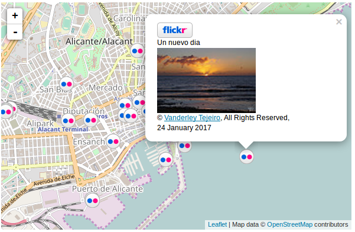

Bienvenido a osmTestMap.
Este proyecto tiene como objetivo mostrar las posibilidades que ofrece OpenStreetMap en portales web, para que sirvan de inspiración a organizaciones y particulares que quieran llegar más lejos con un mapa. Todos los desarrollos web se han realizado utilizando librerías de código abierto como Leaflet, Jquery, Nominatim, Overpass, Sidebar plugin para Leaflet y OSRM
Documento con la presentación del evento celebrado el 14 de octubre de 2016
Diseños básico
Estos primeros diseños tienen como objetivo crear sencillas páginas web con un contenedor de mapa. Los elementos que son necesario personalizar son la coordenada geográfica de ubicación del centro del mapa y el nivel de zoom deseado.
- Mapa en ventana: Es el ejemplo más básico, con apenas 5 líneas de código
| - Mapa con vectores (geoJSON): Sí quieres marcar alguna zona, o resaltarla te recomendamos utilizar el estádar GeoJSON. En geojson.io puedes crearlo con facilidad y sin conocimientos de su sintaxis
| - Blog personal con enlaces y mapa en iframe: Sí tienes un blog que no te permite escribir código HTML o Javascript, o bien no quieres complicarte la vida y
sólo quieres incluir el mapa de tu zona puedes utilizar el tag IFRAME que permite incluir una página dentro de otra.
En la web de OpenStreetMap tienes un asistente en el apartado botón de "Compartir"
| - Mapa a pantalla completa: Sí quieres que tus usuarios vean bien un mapa, no lo dudes, y ponlo a pantalla completa
| - Uso de iconos personalizados e información en 'popup' a partir de atributos
de un GeoJSON: Algunos usuarios colaboradoras de OpenStreetMap se decepcionan porque no les aparece determinado elemento que han incluido. La razón es que el motor de renderizado utilizado,
Mapnik en el caso del visor por defecto de OpenStreetMap no incluye simbología para todos los elementos. Una interesante manera de resaltar un elemento es utilizando nuestros propios iconos, e
incluso podemos darle un toque de originalidad con popups personalizados. Es el caso que ofrecemos, como a partir de un GeoJSON con atributos podemos interaccionar de manera muy elegante
|
Llamadas a APIs
Gran parte de la funcionalidad de un mapa viene dado por el consumo de servicios proporcionados por APIs externas. En este sentido vamos a utilizar dos:
Nominatim: Es el buscador por defecto que aparece en la web oficial de OSM
-
Nominatim: búsqueda topónimos (sólo lista): Es el ejemplo más básico. El objetivo es obtener un listado de elementos (topónimos) que corresponden con una consulta realizada por el usuario
| -
Nominatim: geocodificación inversa (reverse geocoding): La geocodificación inversa es una función que te permite obtener una dirección postal a partir
de unas coordenadas. En este ejemplo se enlaza el evento click en el mapa para obtener las coordenadas y pasárselas a la API de nominatim para obtener la dirección.
| -
Nominatim: búsqueda por categorías y mapa: En este caso vamos combinando todos los elementos para obtener una navegación más fluida y atractiva.
Se trata de obtener todos los elementos de una determinada categoría (bar, pub, restaurante, etc). El resultado aparece en un listado. Tiene una apariencia
similar a Google Maps
|
Overpass: Es una herramienta de filtrado de datos basado en la web para OpenStreetMap.Con overpass turbo se pueden ejecutar consultas bastante sofisticadas. El principal problema es que los tiempos de respuesta son un poco largos (ten paciencia y espera un poco)
Proveedores
En el contenedor de mapas utilizado (Leaflet) se dispone de multitud de opciones para añadir capas procedentes de diferentes proveedores. Podemos hacer una primera clasificación entre los proveedores que precisan de conexión a Internet, y luego aquellos que trabajan en modo off-line, porque los datos se encuentran localmente en el servidor.
a) Conexión a Intenet: Proveedores externos de OpenStreetMap
-
WMS y servicios de tiles externas: Puedes añadir cualquier repositorio de tiles que quieras, incluido servicios WMS, y añadir un menú de navegación
| - Varios proveedores (enlace externo)
b) Datos en local
b.1. Directorio de Tiles: Directorio con una estructura basada en el estándard TMS
-
Conjunto de imágenes (tiles) en directorio TMS. Sin requerimiento: Si no quieres depender de un servidor puedes
almacenar en disco tus imágenes (tiles) siguiendo el esquema TMS para un rápido acceso. Es la solucción más económica, pero a costa de tener que mantener un ingente número de imágenes en disco.
|
- Nombre y estructura de las tiles - Enlace externo
b.2. Fichero MbTiles: Mbtiles, es una base de datos de formato SQLite que contiene una tabla (tiles) que contiene, por cada registro, la imagen correspondiente en formato binario y el nivel al que pertenece. Al constar de un único fichero resulta muy práctico para aplicaciones móviles, o webs sin conexión a internet.
- Uso de base de datos Mbtiles sin necesidad de un servidor:
Este sistema utiliza exclusivamente Javascript para acceder a la base de datos, por lo que no precisa de peticiones a un servidor (PHP, ASP, Java, etc). Tan solo
necesitamos un navegador de última generación. Este sistema en cambio tiene como inconveniente que en el momento de la carga de la página web tiene que descargarse
en local el archivo mbtiles al que llama, por lo que puede demorarse un poco.
En el ejemplo su utiliza una base de datos creada con MOBAC (Mobile Atlas Creator) que utiliza de fuente el WMS del PNOA. Aunque también se puede utilizar base de datos descargada del IGN, en el apartado Descargas para móviles
| - Documento para generar MbTiles con Qgis: Este documento nos muestra como podemos generar nuestras propias base de datos MbTiles a partir de servicios WMS con Qgis.
- Mbtiles gestionadas por un servidor con PHP:
Este ejemplo Requiere tener instalado en un servidor PHP y PHP-SQLite. Github-pg no admite ejecutar PHP, por ello no funciona la demo aquí, sin embargo te mostramos un enlace externo.
La ventaja de este sistema es que es PHP quien hace las peticiones a la base de datos, descargando sólo aquellas tiles que se precisan mostrar, por lo que la carga inicial es muy rápida.
|
Aspectos avanzados: Plugins
Leaflet dispone de una amplia variedad de plugins de terceros para proveerlo de funcionalidades extra. Puedes ver los plugins disponibles aquí
- Plugin Leaflet-Photo para Flickr:
Este plugin es una adaptación del plugin Photo adaptado para visualizar la posición de las fotografías georreferenciadas
que se encuentran en la cuenta de un usuario de Flickr. La razón es que Picasa, el sistema original, tiende a ser sustituido por Google Photo, y Flickr, además de permitir hasta 1 Terabyte de
fotos, dispone de un API Rest muy bien estructurada.
En el ejemplo que os ofrecemos puedes ver las fotos que he realizado por diferentes localizaciones.
| - Plugin oficial de Flickr para Leaflet:
Este plugin muestra en el mapa un icono con todas las fotos georreferenciadas. Permite llamadas AJAX y JSONP

| - Leaflet-Photo:
geolocaliza imágenes ya georeferenciadas.
Este plugin precisa de PHP. No podrás ver el resultado porque Github-pg no admite PHP.
- Migration layer:
Genera mapas de flujo con un resultado gráfico muy atractivo. Sí quieres conocer más como funciona puedes consultar la
https://github.com/react-map/leaflet.migrationLayerfuente original
| | - Story map:
Este plugin nos permite conforme nos desplazamos por el texto localizaciones predeterminadas. Es la forma más edecuada de presentar un directorio.
Si quieres conocer más como funciona puedes consultar el
proyecto original
|
Cálculo de rutas (Routing)
OpenStreetMap nació como un callejero digital, por lo que la funcionalidad de cálculo de rutas es la principal de las utilidades que pueden ejercerse sobre este conjunto de datos. Hay varias formas de tratar este tema. Aquí verás los proyectos más destacados
- Open Source Routing Machine:
OSRM es el motor de routing "oficial" de OpenStretMap. Se caracteriza por su rapidez y por disponer de un API pública sobre
la que vertebrar todo su poder.
En el ejemplo que os ofrecemos puedes ver las capacidades de este sistema: geocodificación inversa para obtener direcciones postales con un simple golpe de ratón, cálculo de ruta, alternativa a la ruta principal, mensaje de navegación pormenorizado, uso de distintos idiomas, etc.
| - PgRouting es otro de los grandes proyectos para cálculo de rutas. Se trata de una extensión para la base de datos PostgreSQL. En principio trabaja sobre cualquier tipo de red, pero es en OpenStreetMap donde se han centrado las herramientas para transformar el "Planet" de OSM en datos "routables" y funciones para sacarle partido.
 |
Sincronizar mapas
Ejemplo donde podemos comparar dos mapas de diferentes fechas. Ejemplo basado en el desarrollo de Joan Cano en https://joancano.github.io/Joanproject/blog.html
|Enlaces de interés
Aquí podrás ver alguno de los proyectos más interesantes sobre OpenStreetMap
- Cambios en tiempo real
- Elementos cartografiables
- Videos con la evolución de OSM
- Comparativa de mapas (OSM, GMaps, Here)
- Cálculo tamaño directorio de tiles
- HOT Humanitarian OpenStreetMap Team
- Listado servicios OSM
- Crear PDF para trabajo de campo (sucesor de Walking Paper)
- Maposmatic: Para crear atlas en PDF con listado de calles
Autor y contribuciones
Los ejemplos de esta web han sido realizados por José Manuel Mira Martínez. Sí se ha utilizado código de otro proyecto libre en el código fuente aparece citado.
Contacto
Puedes ponerte en contacto en esta dirección de correo: josema.mira@gmail.com